2023 Advanced Higher Physics questions
Source: Scottish Qualifications Authority (SQA) / Qualifications Scotland. This is a StemInteract HTML companion, not an official HTML edition. Selectable text is supplied alongside original page images. Use the images or original PDF for equations, powers, fractions, vector notation, tables and diagrams; text extraction cannot fully preserve mathematical layout.
Jump to a question
PDF page 1
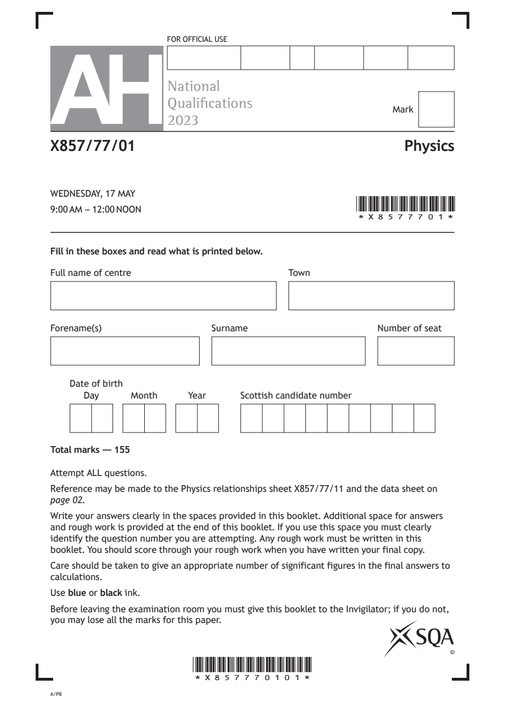
Selectable page text
FOR OFFICIAL USE
AH
National
Qualications
Mark
2023
X857/77/01 Physics
WEDNESDAY, 17 MAY
9:00 AM – 12:00 NOON
*X8577701*
Fill in these boxes and read what is printed below.
Full name of centre Town
Forename(s) Surname Number of seat
Date of birth
Day Month Year Scottish candidate number
Total marks — 155
Attempt ALL questions.
Reference may be made to the Physics relationships sheet X857/77/11 and the data sheet on
page 02.
Write your answers clearly in the spaces provided in this booklet. Additional space for answers
and rough work is provided at the end of this booklet. If you use this space you must clearly
identify the question number you are attempting. Any rough work must be written in this
booklet. You should score through your rough work when you have written your final copy.
Care should be taken to give an appropriate number of significant figures in the final answers to
calculations.
Use blue or black ink.
Before leaving the examination room you must give this booklet to the Invigilator; if you do not,
you may lose all the marks for this paper.
©
*X857770101*
A/PBPDF page 2
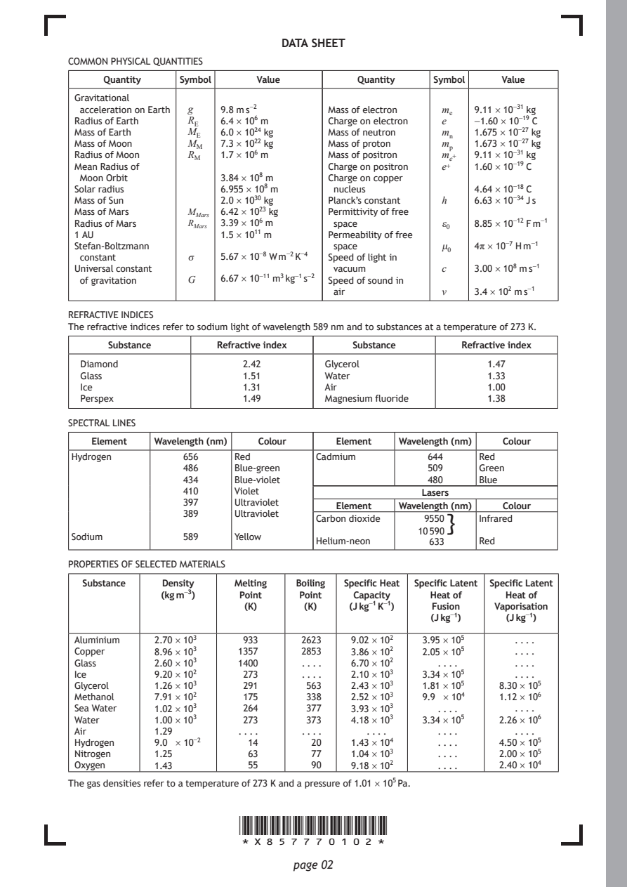
Selectable page text
DATA SHEET
COMMON PHYSICAL QUANTITIES
Quantity Symbol Value Quantity Symbol Value
Gravitational
acceleration on Earth g 9.8 m s⁻² Mass of electron mₑ 9.11 × 10⁻³¹ kg
Radius of Earth R_{E} 6.4 × 10⁶ m Charge on electron e −1.60 × 10⁻¹⁹ C
Mass of Earth M_{E} 6.0 × 10²⁴ kg Mass of neutron mₙ 1.675 × 10⁻²⁷ kg
Mass of Moon M_{M} 7.3 × 10²² kg Mass of proton mₚ 1.673 × 10⁻²⁷ kg
Radius of Moon R_{M} 1.7 × 10⁶ m Mass of positron mₑ⁺ 9.11 × 10⁻³¹ kg
Mean Radius of Charge on positron e⁺ 1.60 × 10⁻¹⁹ C
Moon Orbit 3.84 × 10⁸ m Charge on copper
Solar radius 6.955 × 10⁸ m nucleus 4.64 × 10⁻¹⁸ C
Mass of Sun 2.0 × 10³⁰ kg Planck’s constant h 6.63 × 10⁻³⁴ J s
Mass of Mars M_{M}ₐᵣₛ 6.42 × 10²³ kg Permittivity of free
Radius of Mars R_{M}ₐᵣₛ 3.39 × 10⁶ m space ε₀ 8.85 × 10⁻¹² F m⁻¹
1 AU 1.5 × 10¹¹ m Permeability of free
Stefan-Boltzmann space μ₀ 4π × 10⁻⁷ H m⁻¹
constant σ 5.67 × 10⁻⁸ W m⁻² K⁻⁴ Speed of light in
Universal constant vacuum c 3.00 × 10⁸ m s⁻¹
of gravitation G 6.67 × 10⁻¹¹ m³ kg⁻¹ s⁻² Speed of sound in
air v 3.4 × 10² m s⁻¹
REFRACTIVE INDICES
The refractive indices refer to sodium light of wavelength 589 nm and to substances at a temperature of 273 K.
Substance Refractive index Substance Refractive index
Diamond 2.42 Glycerol 1.47
Glass 1.51 Water 1.33
Ice 1.31 Air 1.00
Perspex 1.49 Magnesium fluoride 1.38
SPECTRAL LINES
Element Wavelength (nm) Colour Element Wavelength (nm) Colour
Hydrogen 656 Red Cadmium 644 Red
486 Blue-green 509 Green
434 Blue-violet 480 Blue
410 Violet Lasers
397 Ultraviolet
Element Wavelength (nm) Colour
389 Ultraviolet
Carbon dioxide 9550} Infrared
10 590
Sodium 589 Yellow
Helium-neon 633 Red
PROPERTIES OF SELECTED MATERIALS
Substance Density Melting Boiling Specific Heat Specific Latent Specific Latent
(kg m⁻³) Point Point Capacity Heat of Heat of
(K) (K) (J kg⁻¹ K⁻¹) Fusion Vaporisation
(J kg⁻¹) (J kg⁻¹)
Aluminium 2.70 × 10³ 933 2623 9.02 × 10² 3.95 × 10⁵ . . . .
Copper 8.96 × 10³ 1357 2853 3.86 × 10² 2.05 × 10⁵ . . . .
Glass 2.60 × 10³ 1400 . . . . 6.70 × 10² . . . . . . . .
Ice 9.20 × 10² 273 . . . . 2.10 × 10³ 3.34 × 10⁵ . . . .
Glycerol 1.26 × 10³ 291 563 2.43 × 10³ 1.81 × 10⁵ 8.30 × 10⁵
Methanol 7.91 × 10² 175 338 2.52 × 10³ 9.9 × 10⁴ 1.12 × 10⁶
Sea Water 1.02 × 10³ 264 377 3.93 × 10³ . . . . . . . .
Water 1.00 × 10³ 273 373 4.18 × 10³ 3.34 × 10⁵ 2.26 × 10⁶
Air 1.29 . . . . . . . . . . . . . . . . . . . .
Hydrogen 9.0 × 10⁻² 14 20 1.43 × 10⁴ . . . . 4.50 × 10⁵
Nitrogen 1.25 63 77 1.04 × 10³ . . . . 2.00 × 10⁵
Oxygen 1.43 55 90 9.18 × 10² . . . . 2.40 × 10⁴
The gas densities refer to a temperature of 273 K and a pressure of 1.01 × 10⁵ Pa.
*X857770102*
page 02PDF page 3

Selectable page text
[Turn over for next question
DO NOT WRITE ON THIS PAGE
*X857770103*
page 03PDF page 4
Question 1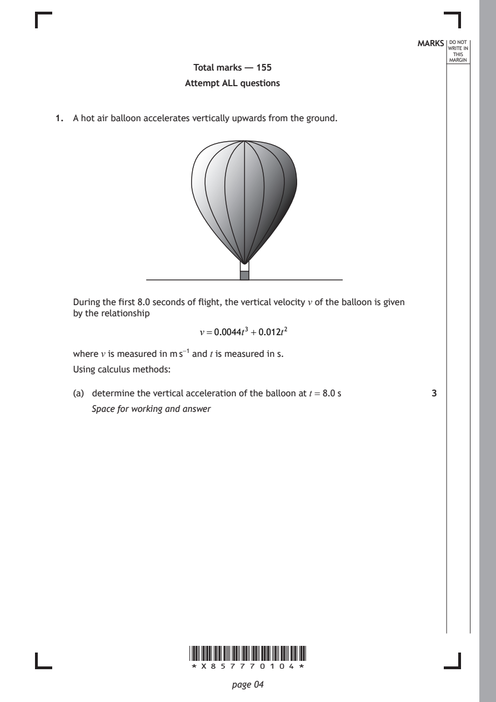
Selectable page text
MARKS _{W}^{D}_{R}^{O}_{I} _{T}^{N}OT
E IN
THIS
MARGIN
Total marks — 155
Attempt ALL questions
1. A hot air balloon accelerates vertically upwards from the ground.
During the first 8.0 seconds of flight, the vertical velocity v of the balloon is given
by the relationship
v=0.0044t³ +0.012t²
where v is measured in m s⁻¹ and t is measured in s.
Using calculus methods:
(a) determine the vertical acceleration of the balloon at t = 8.0 s 3
Space for working and answer
*X857770104*
page 04PDF page 5
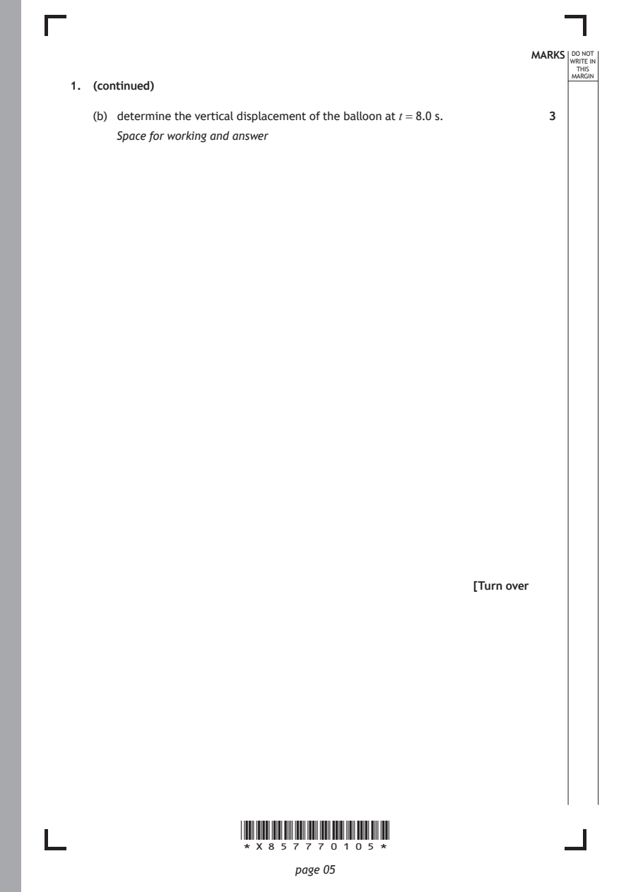
Selectable page text
MARKS _{W}^{D}_{R}^{O}_{I} _{T}^{N}OT
E IN
THIS
MARGIN
1. (continued)
(b) determine the vertical displacement of the balloon at t = 8.0 s. 3
Space for working and answer
[Turn over
*X857770105*
page 05PDF page 6
Question 2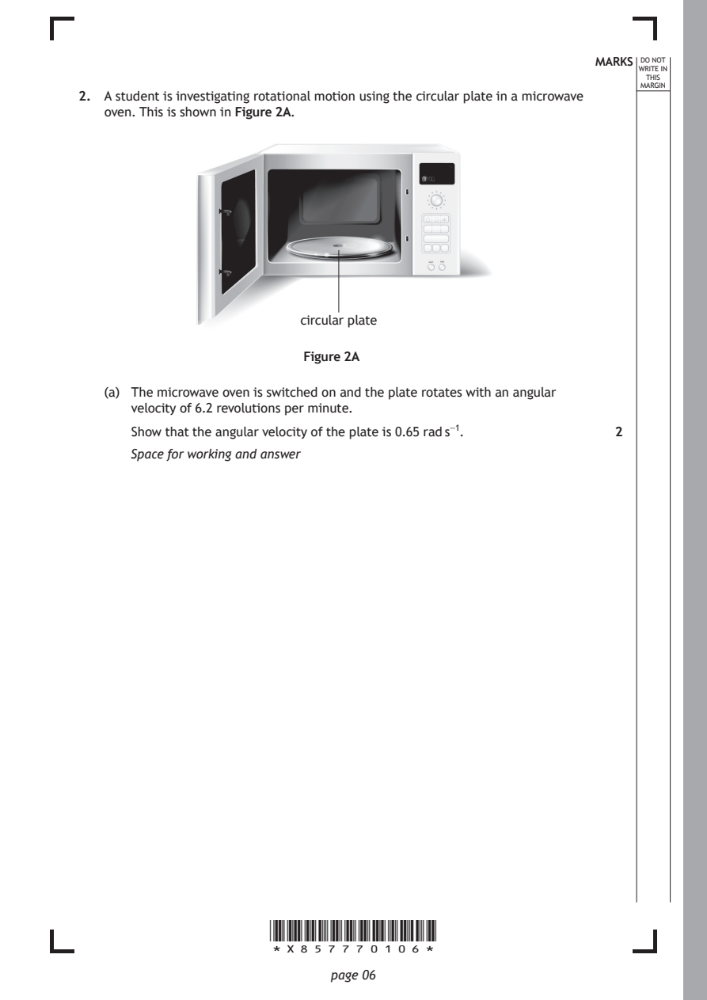
Selectable page text
MARKS _{W}^{D}_{R}^{O}_{I} _{T}^{N}OT
E IN
THIS
MARGIN
2. A student is investigating rotational motion using the circular plate in a microwave
oven. This is shown in Figure 2A.
circular plate
Figure 2A
(a) The microwave oven is switched on and the plate rotates with an angular
velocity of 6.2 revolutions per minute.
Show that the angular velocity of the plate is 0.65 rad s⁻¹. 2
Space for working and answer
*X857770106*
page 06PDF page 7
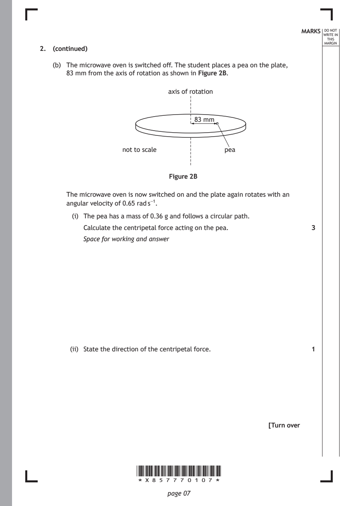
Selectable page text
MARKS _{W}^{D}_{R}^{O}_{I} _{T}^{N}OT
E IN
THIS
MARGIN
2. (continued)
(b) The microwave oven is switched off. The student places a pea on the plate,
83 mm from the axis of rotation as shown in Figure 2B.
axis of rotation
83 mm
not to scale pea
Figure 2B
The microwave oven is now switched on and the plate again rotates with an
angular velocity of 0.65 rad s⁻¹.
(i) The pea has a mass of 0.36 g and follows a circular path.
Calculate the centripetal force acting on the pea. 3
Space for working and answer
(ii) State the direction of the centripetal force. 1
[Turn over
*X857770107*
page 07PDF page 8
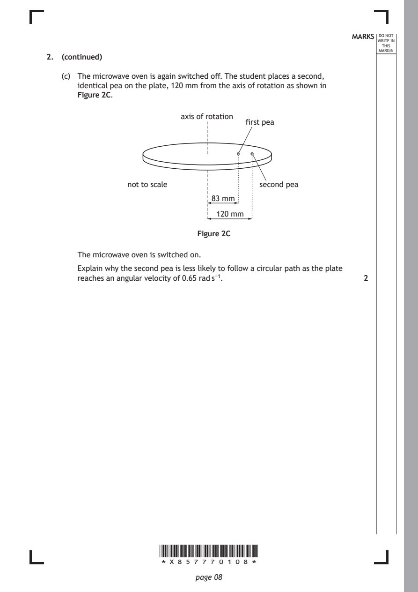
Selectable page text
MARKS _{W}^{D}_{R}^{O}_{I} _{T}^{N}OT
E IN
THIS
MARGIN
2. (continued)
(c) The microwave oven is again switched off. The student places a second,
identical pea on the plate, 120 mm from the axis of rotation as shown in
Figure 2C.
axis of rotation
first pea
not to scale second pea
83 mm
120 mm
Figure 2C
The microwave oven is switched on.
Explain why the second pea is less likely to follow a circular path as the plate
reaches an angular velocity of 0.65 rad s⁻¹. 2
*X857770108*
page 08PDF page 9
Question 3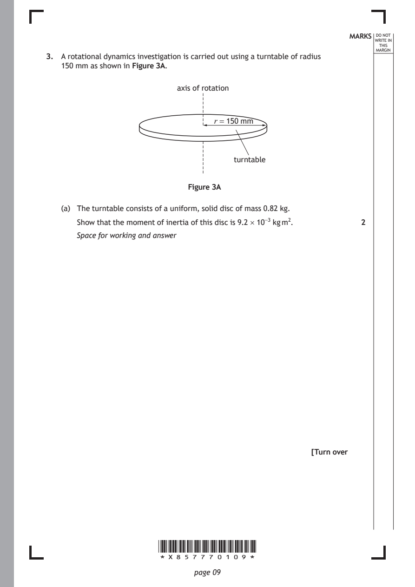
Selectable page text
MARKS _{W}^{D}_{R}^{O}_{I} _{T}^{N}OT
E IN
THIS
MARGIN
3. A rotational dynamics investigation is carried out using a turntable of radius
150 mm as shown in Figure 3A.
axis of rotation
r = 150 mm
turntable
Figure 3A
(a) The turntable consists of a uniform, solid disc of mass 0.82 kg.
Show that the moment of inertia of this disc is 9.2 × 10⁻³ kg m². 2
Space for working and answer
[Turn over
*X857770109*
page 09PDF page 10
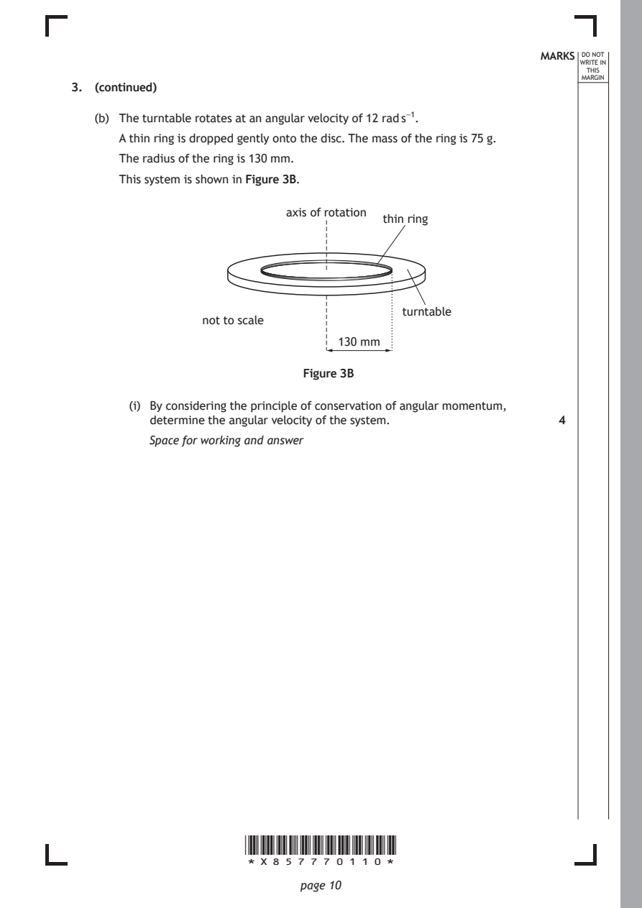
Selectable page text
MARKS _{W}^{D}_{R}^{O}_{I} _{T}^{N}OT
E IN
THIS
MARGIN
3. (continued)
(b) The turntable rotates at an angular velocity of 12 rad s⁻¹.
A thin ring is dropped gently onto the disc. The mass of the ring is 75 g.
The radius of the ring is 130 mm.
This system is shown in Figure 3B.
axis of rotation
thin ring
turntable
not to scale
130 mm
Figure 3B
(i) By considering the principle of conservation of angular momentum,
determine the angular velocity of the system. 4
Space for working and answer
*X857770110*
page 10PDF page 11
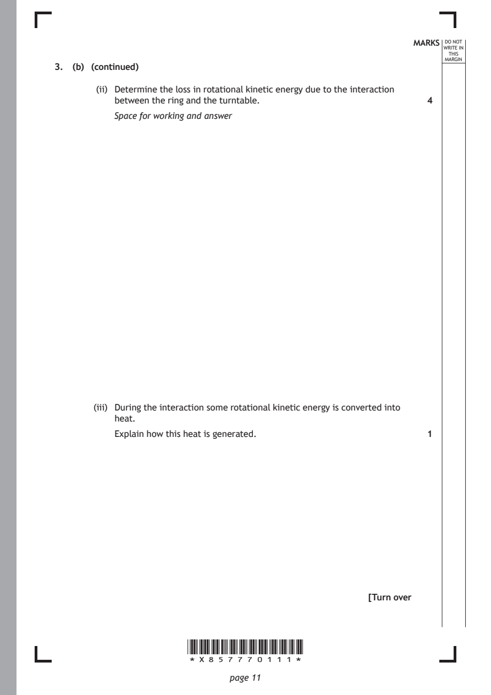
Selectable page text
MARKS _{W}^{D}_{R}^{O}_{I} _{T}^{N}OT
E IN
THIS
MARGIN
3. (b) (continued)
(ii) Determine the loss in rotational kinetic energy due to the interaction
between the ring and the turntable. 4
Space for working and answer
(iii) During the interaction some rotational kinetic energy is converted into
heat.
Explain how this heat is generated. 1
[Turn over
*X857770111*
page 11PDF page 12
Question 4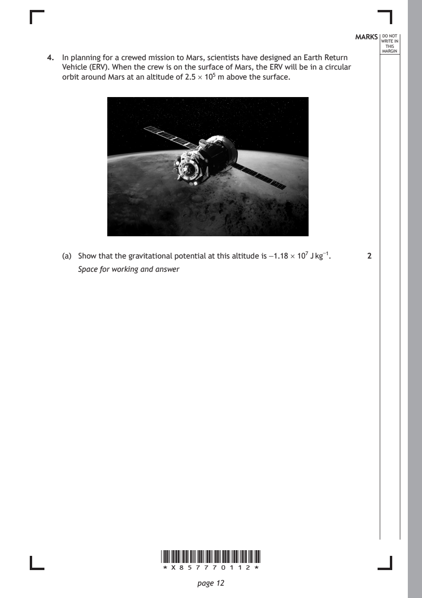
Selectable page text
MARKS _{W}^{D}_{R}^{O}_{I} _{T}^{N}OT
E IN
THIS
MARGIN
4. In planning for a crewed mission to Mars, scientists have designed an Earth Return
Vehicle (ERV). When the crew is on the surface of Mars, the ERV will be in a circular
orbit around Mars at an altitude of 2.5 × 10⁵ m above the surface.
(a) Show that the gravitational potential at this altitude is −1.18 × 10⁷ J kg⁻¹. 2
Space for working and answer
*X857770112*
page 12PDF page 13
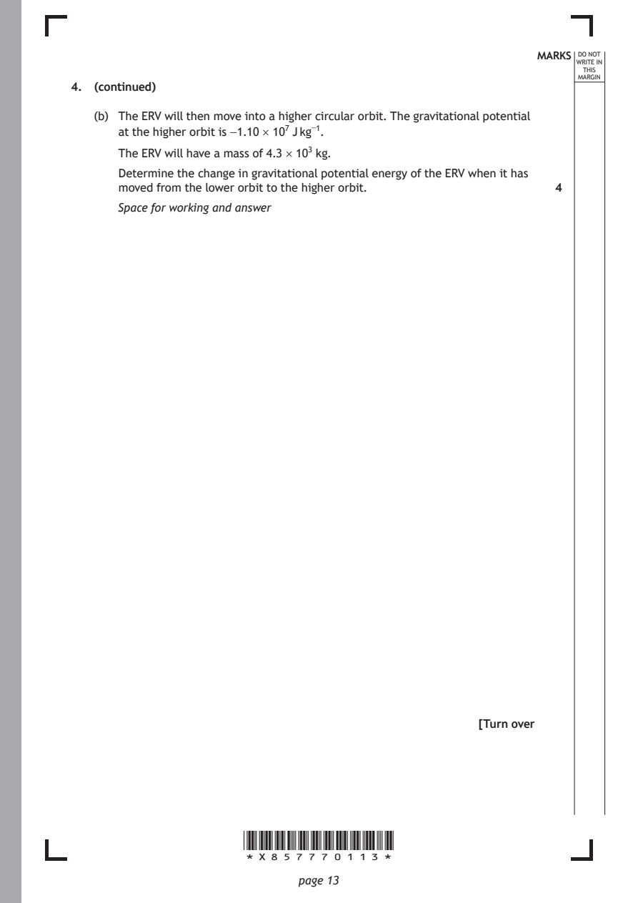
Selectable page text
MARKS _{W}^{D}_{R}^{O}_{I} _{T}^{N}OT
E IN
THIS
MARGIN
4. (continued)
(b) The ERV will then move into a higher circular orbit. The gravitational potential
at the higher orbit is −1.10 × 10⁷ J kg⁻¹.
The ERV will have a mass of 4.3 × 10³ kg.
Determine the change in gravitational potential energy of the ERV when it has
moved from the lower orbit to the higher orbit. 4
Space for working and answer
[Turn over
*X857770113*
page 13PDF page 14
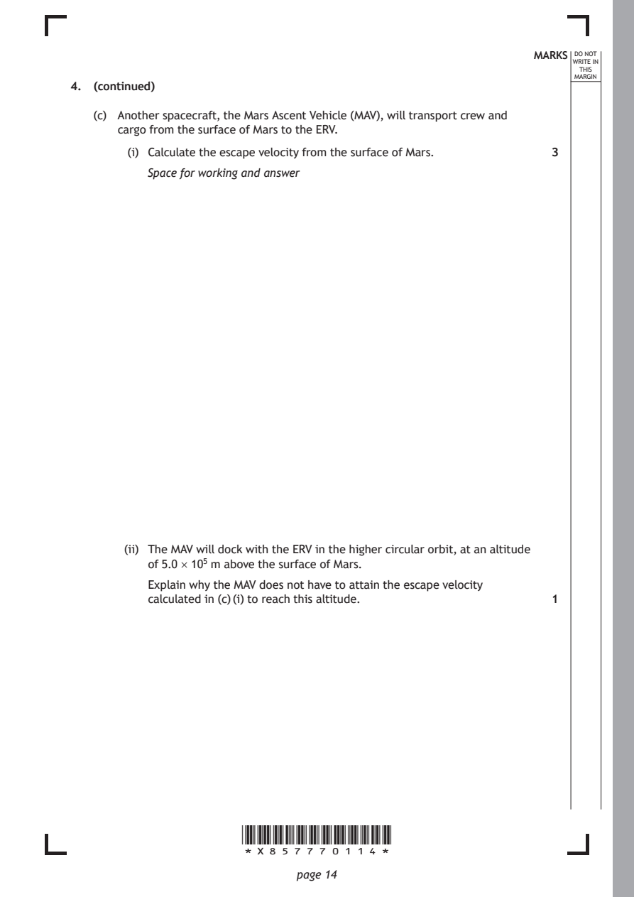
Selectable page text
MARKS _{W}^{D}_{R}^{O}_{I} _{T}^{N}OT
E IN
THIS
MARGIN
4. (continued)
(c) Another spacecraft, the Mars Ascent Vehicle (MAV), will transport crew and
cargo from the surface of Mars to the ERV.
(i) Calculate the escape velocity from the surface of Mars. 3
Space for working and answer
(ii) The MAV will dock with the ERV in the higher circular orbit, at an altitude
of 5.0 × 10⁵ m above the surface of Mars.
Explain why the MAV does not have to attain the escape velocity
calculated in (c) (i) to reach this altitude. 1
*X857770114*
page 14PDF page 15
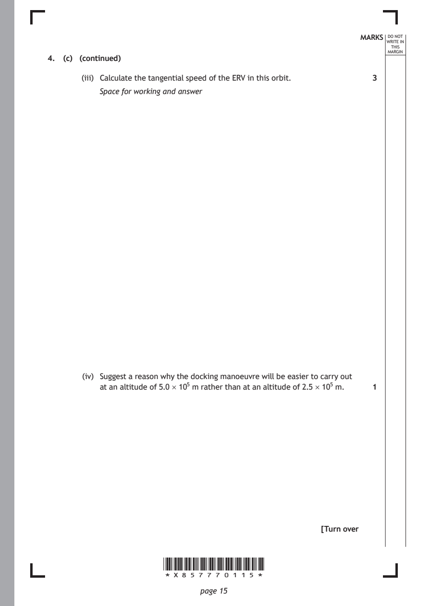
Selectable page text
MARKS _{W}^{D}_{R}^{O}_{I} _{T}^{N}OT
E IN
THIS
MARGIN
4. (c) (continued)
(iii) Calculate the tangential speed of the ERV in this orbit. 3
Space for working and answer
(iv) Suggest a reason why the docking manoeuvre will be easier to carry out
at an altitude of 5.0 × 10⁵ m rather than at an altitude of 2.5 × 10⁵ m. 1
[Turn over
*X857770115*
page 15PDF page 16
Question 5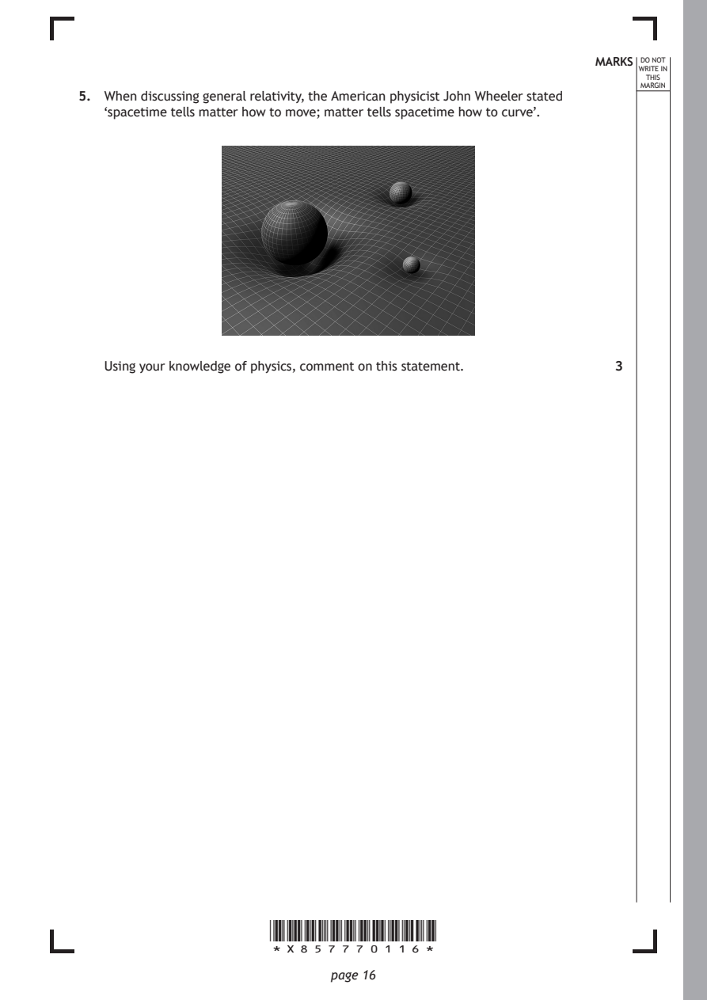
Selectable page text
MARKS _{W}^{D}_{R}^{O}_{I} _{T}^{N}OT
E IN
THIS
MARGIN
5. When discussing general relativity, the American physicist John Wheeler stated
‘spacetime tells matter how to move; matter tells spacetime how to curve’.
Using your knowledge of physics, comment on this statement. 3
*X857770116*
page 16PDF page 17
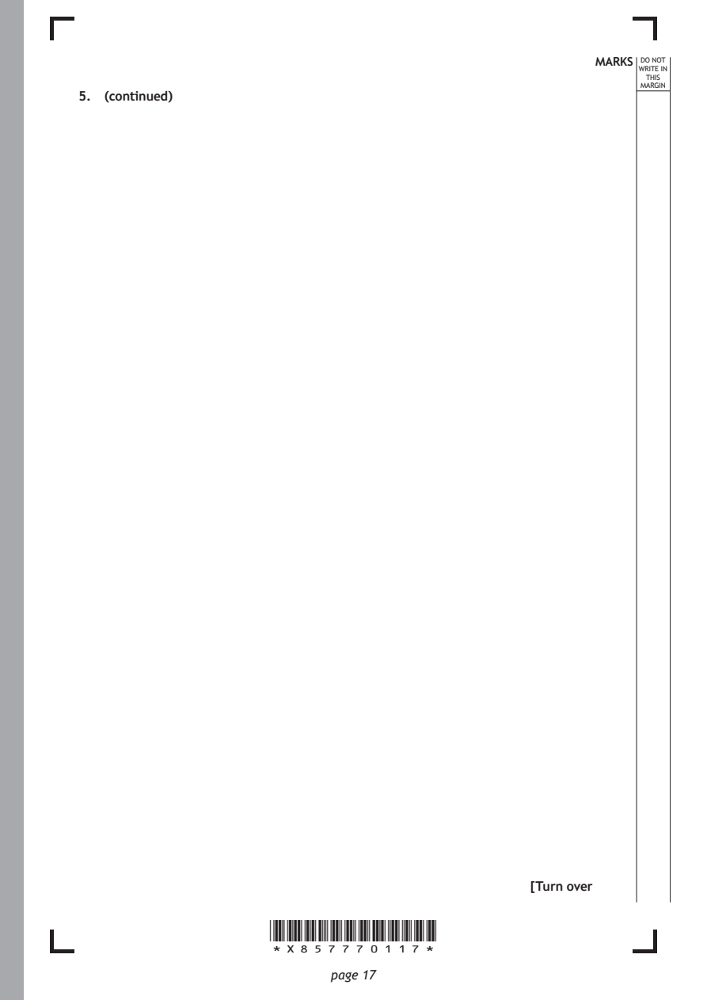
Selectable page text
MARKS _{W}^{D}_{R}^{O}_{I} _{T}^{N}OT
E IN
THIS
MARGIN
5. (continued)
[Turn over
*X857770117*
page 17PDF page 18
Question 6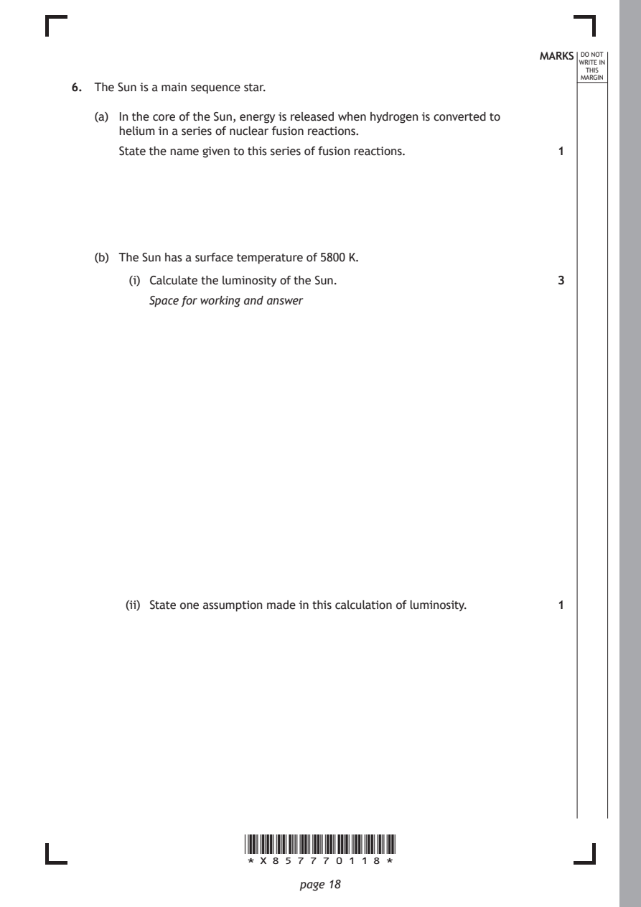
Selectable page text
MARKS _{W}^{D}_{R}^{O}_{I} _{T}^{N}OT
E IN
THIS
MARGIN
6. The Sun is a main sequence star.
(a) In the core of the Sun, energy is released when hydrogen is converted to
helium in a series of nuclear fusion reactions.
State the name given to this series of fusion reactions. 1
(b) The Sun has a surface temperature of 5800 K.
(i) Calculate the luminosity of the Sun. 3
Space for working and answer
(ii) State one assumption made in this calculation of luminosity. 1
*X857770118*
page 18PDF page 19
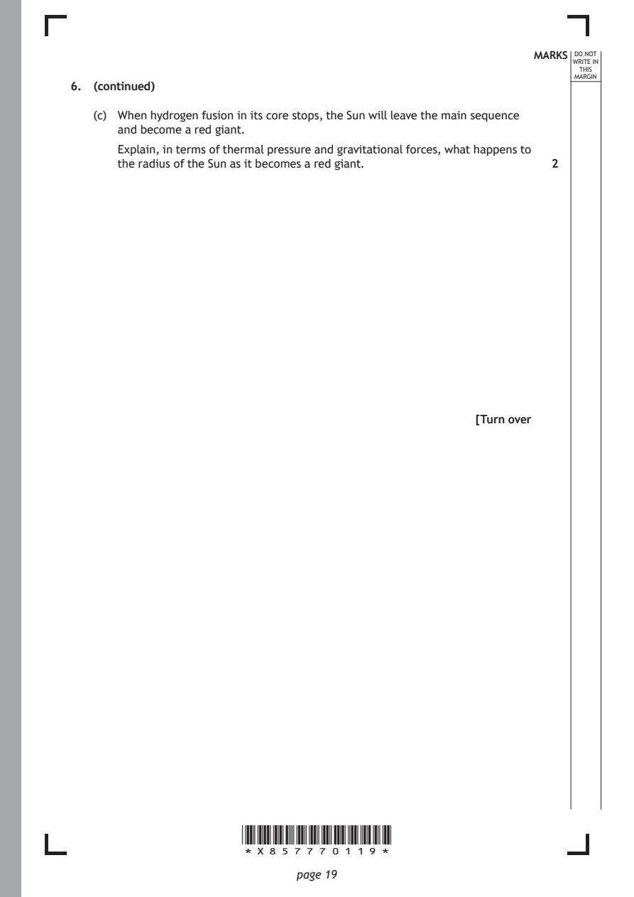
Selectable page text
MARKS _{W}^{D}_{R}^{O}_{I} _{T}^{N}OT
E IN
THIS
MARGIN
6. (continued)
(c) When hydrogen fusion in its core stops, the Sun will leave the main sequence
and become a red giant.
Explain, in terms of thermal pressure and gravitational forces, what happens to
the radius of the Sun as it becomes a red giant. 2
[Turn over
*X857770119*
page 19PDF page 20
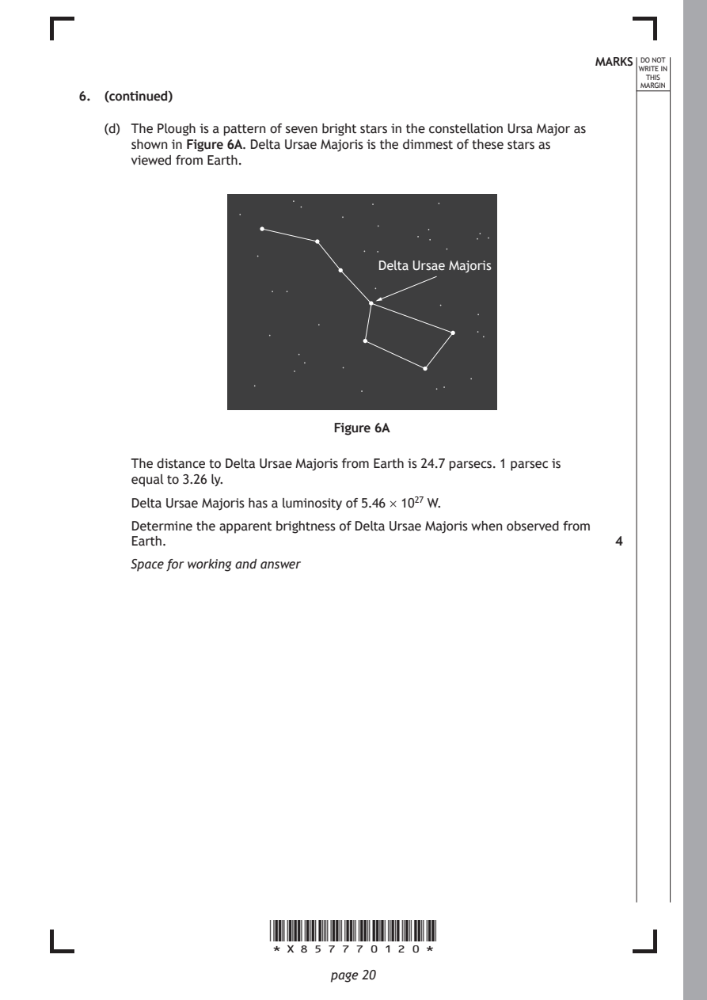
Selectable page text
MARKS _{W}^{D}_{R}^{O}_{I} _{T}^{N}OT
E IN
THIS
MARGIN
6. (continued)
(d) The Plough is a pattern of seven bright stars in the constellation Ursa Major as
shown in Figure 6A. Delta Ursae Majoris is the dimmest of these stars as
viewed from Earth.
Delta Ursae Majoris
Figure 6A
The distance to Delta Ursae Majoris from Earth is 24.7 parsecs. 1 parsec is
equal to 3.26 ly.
Delta Ursae Majoris has a luminosity of 5.46 × 10²⁷ W.
Determine the apparent brightness of Delta Ursae Majoris when observed from
Earth. 4
Space for working and answer
*X857770120*
page 20PDF page 21
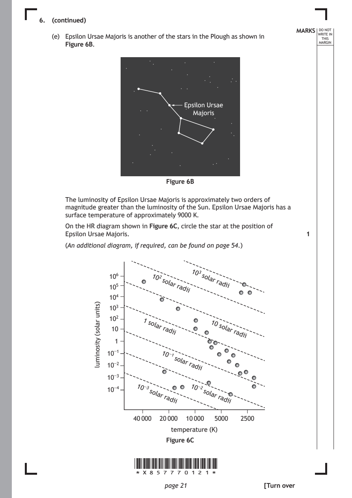
Selectable page text
6. (continued)
MARKS _{W}^{D}_{R}^{O}_{I} _{T}^{N}OT
(e) Epsilon Ursae Majoris is another of the stars in the Plough as shown in E IN
THIS
Figure 6B. MARGIN
Epsilon Ursae
Majoris
Figure 6B
The luminosity of Epsilon Ursae Majoris is approximately two orders of
magnitude greater than the luminosity of the Sun. Epsilon Ursae Majoris has a
surface temperature of approximately 9000 K.
On the HR diagram shown in Figure 6C, circle the star at the position of
Epsilon Ursae Majoris.
(An additional diagram, if required, can be found on page 54.)
102
solar
radii
103
solar
radii
1
solar
radii
10
solar
radii
10⁻¹
solar
radii
10⁻³ 10⁻²
solar
radii
solar
radii
40 000 20 000 10 000 5000 2500
temperature (K)
*X857770121*
page 21
)stinu
ralos(
ytisonimul
1
10⁶
10⁵
10⁴
10³
10²
10
1
10⁻¹
10⁻²
10⁻³
10⁻⁴
Figure 6C
[Turn overPDF page 22
Question 7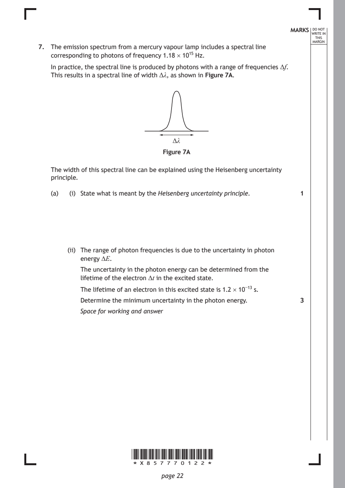
Selectable page text
MARKS _{W}^{D}_{R}^{O}_{I} _{T}^{N}OT
E IN
THIS
MARGIN
7. The emission spectrum from a mercury vapour lamp includes a spectral line
corresponding to photons of frequency 1.18 × 10¹⁵ Hz.
In practice, the spectral line is produced by photons with a range of frequencies Δf.
This results in a spectral line of width Δλ, as shown in Figure 7A.
Δλ
Figure 7A
The width of this spectral line can be explained using the Heisenberg uncertainty
principle.
(a) (i) State what is meant by the Heisenberg uncertainty principle. 1
(ii) The range of photon frequencies is due to the uncertainty in photon
energy ∆E.
The uncertainty in the photon energy can be determined from the
lifetime of the electron ∆t in the excited state.
The lifetime of an electron in this excited state is 1.2 × 10⁻¹³ s.
Determine the minimum uncertainty in the photon energy. 3
Space for working and answer
*X857770122*
page 22PDF page 23
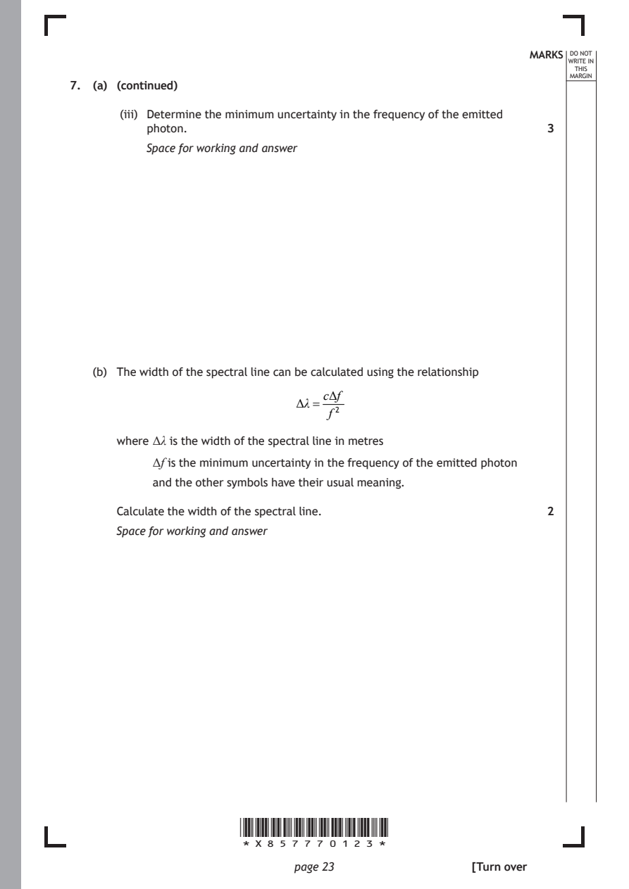
Selectable page text
MARKS _{W}^{D}_{R}^{O}_{I} _{T}^{N}OT
E IN
THIS
MARGIN
7. (a) (continued)
(iii) Determine the minimum uncertainty in the frequency of the emitted
photon. 3
Space for working and answer
(b) The width of the spectral line can be calculated using the relationship
cΔf
Δλ=
f ²
where Δλ is the width of the spectral line in metres
Δf is the minimum uncertainty in the frequency of the emitted photon
and the other symbols have their usual meaning.
Calculate the width of the spectral line. 2
Space for working and answer
*X857770123*
page 23 [Turn overPDF page 24
Question 8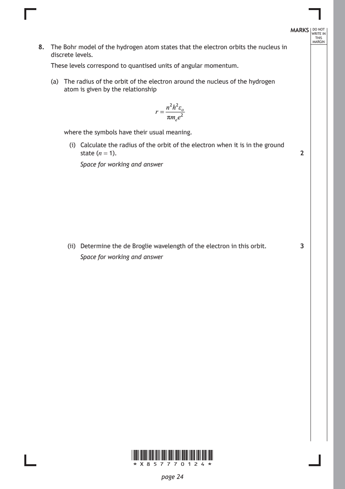
Selectable page text
MARKS _{W}^{D}_{R}^{O}_{I} _{T}^{N}OT
E IN
THIS
MARGIN
8. The Bohr model of the hydrogen atom states that the electron orbits the nucleus in
discrete levels.
These levels correspond to quantised units of angular momentum.
(a) The radius of the orbit of the electron around the nucleus of the hydrogen
atom is given by the relationship
n²hε² _{ο}
r =
πmₑe²
where the symbols have their usual meaning.
(i) Calculate the radius of the orbit of the electron when it is in the ground
state (n = 1). 2
Space for working and answer
(ii) Determine the de Broglie wavelength of the electron in this orbit. 3
Space for working and answer
*X857770124*
page 24PDF page 25
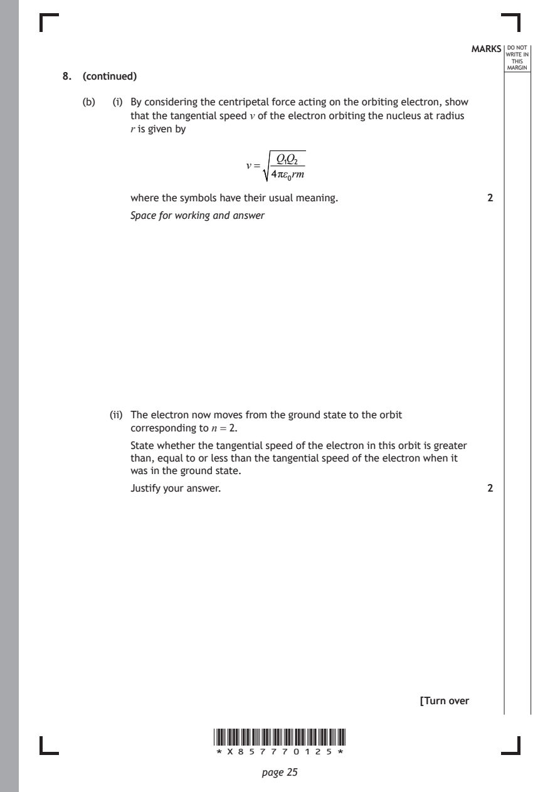
Selectable page text
MARKS _{W}^{D}_{R}^{O}_{I} _{T}^{N}OT
E IN
THIS
MARGIN
8. (continued)
(b) (i) By considering the centripetal force acting on the orbiting electron, show
that the tangential speed v of the electron orbiting the nucleus at radius
r is given by
Q₁Q₂
v=
4πε₀rm
where the symbols have their usual meaning. 2
Space for working and answer
(ii) The electron now moves from the ground state to the orbit
corresponding to n = 2.
State whether the tangential speed of the electron in this orbit is greater
than, equal to or less than the tangential speed of the electron when it
was in the ground state.
Justify your answer. 2
[Turn over
*X857770125*
page 25PDF page 26
Question 9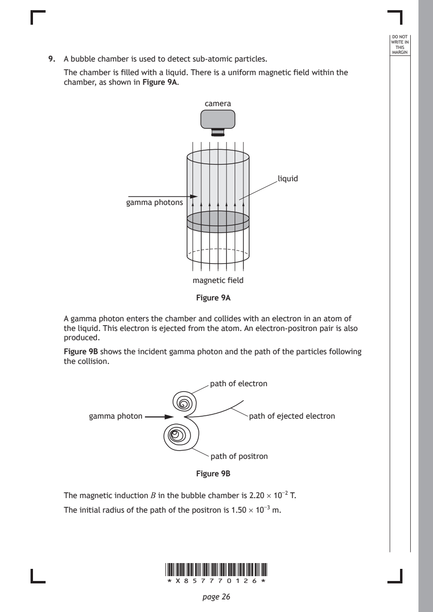
Selectable page text
DO NOT
WRITE IN
THIS
MARGIN
9. A bubble chamber is used to detect sub-atomic particles.
The chamber is filled with a liquid. There is a uniform magnetic field within the
chamber, as shown in Figure 9A.
camera
liquid
gamma photons
magnetic field
Figure 9A
A gamma photon enters the chamber and collides with an electron in an atom of
the liquid. This electron is ejected from the atom. An electron-positron pair is also
produced.
Figure 9B shows the incident gamma photon and the path of the particles following
the collision.
path of electron
gamma photon path of ejected electron
path of positron
Figure 9B
The magnetic induction B in the bubble chamber is 2.20 × 10⁻² T.
The initial radius of the path of the positron is 1.50 × 10⁻³ m.
*X857770126*
page 26PDF page 27
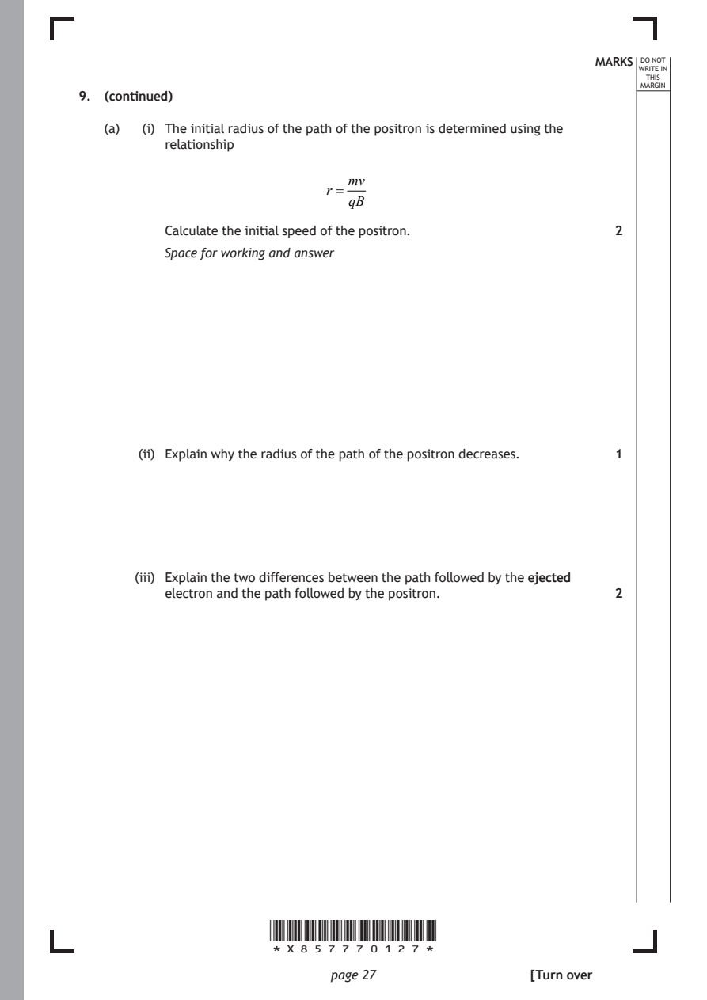
Selectable page text
MARKS _{W}^{D}_{R}^{O}_{I} _{T}^{N}OT
E IN
THIS
MARGIN
9. (continued)
(a) (i) The initial radius of the path of the positron is determined using the
relationship
mv
r =
qB
Calculate the initial speed of the positron. 2
Space for working and answer
(ii) Explain why the radius of the path of the positron decreases. 1
(iii) Explain the two differences between the path followed by the ejected
electron and the path followed by the positron. 2
*X857770127*
page 27 [Turn overPDF page 28
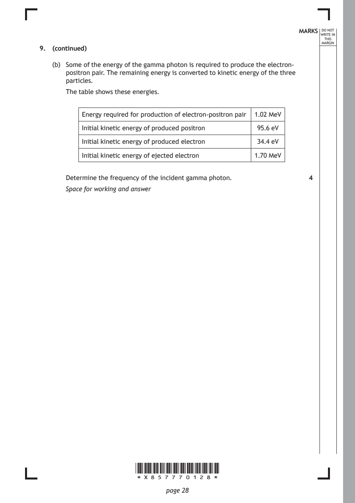
Selectable page text
MARKS _{W}^{D}_{R}^{O}_{I} _{T}^{N}OT
E IN
THIS
MARGIN
9. (continued)
(b) Some of the energy of the gamma photon is required to produce the electron-
positron pair. The remaining energy is converted to kinetic energy of the three
particles.
The table shows these energies.
Energy required for production of electron-positron pair 1.02 MeV
Initial kinetic energy of produced positron 95.6 eV
Initial kinetic energy of produced electron 34.4 eV
Initial kinetic energy of ejected electron 1.70 MeV
Determine the frequency of the incident gamma photon. 4
Space for working and answer
*X857770128*
page 28PDF page 29

Selectable page text
[Turn over for next question
DO NOT WRITE ON THIS PAGE
*X857770129*
page 29PDF page 30
Question 10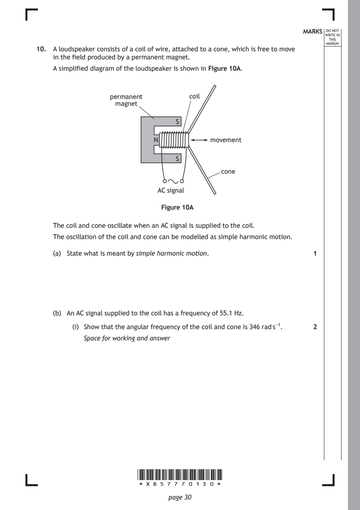
Selectable page text
MARKS _{W}^{D}_{R}^{O}_{I} _{T}^{N}OT
E IN
THIS
MARGIN
10. A loudspeaker consists of a coil of wire, attached to a cone, which is free to move
in the field produced by a permanent magnet.
A simplified diagram of the loudspeaker is shown in Figure 10A.
permanent coil
magnet
S
N movement
S
cone
AC signal
Figure 10A
The coil and cone oscillate when an AC signal is supplied to the coil.
The oscillation of the coil and cone can be modelled as simple harmonic motion.
(a) State what is meant by simple harmonic motion. 1
(b) An AC signal supplied to the coil has a frequency of 55.1 Hz.
(i) Show that the angular frequency of the coil and cone is 346 rad s⁻¹. 2
Space for working and answer
*X857770130*
page 30PDF page 31
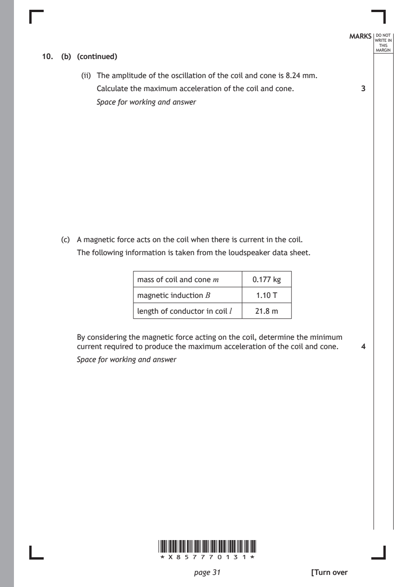
Selectable page text
MARKS _{W}^{D}_{R}^{O}_{I} _{T}^{N}OT
E IN
THIS
MARGIN
10. (b) (continued)
(ii) The amplitude of the oscillation of the coil and cone is 8.24 mm.
Calculate the maximum acceleration of the coil and cone. 3
Space for working and answer
(c) A magnetic force acts on the coil when there is current in the coil.
The following information is taken from the loudspeaker data sheet.
mass of coil and cone m 0.177 kg
magnetic induction B 1.10 T
length of conductor in coil l 21.8 m
By considering the magnetic force acting on the coil, determine the minimum
current required to produce the maximum acceleration of the coil and cone. 4
Space for working and answer
*X857770131*
page 31 [Turn overPDF page 32
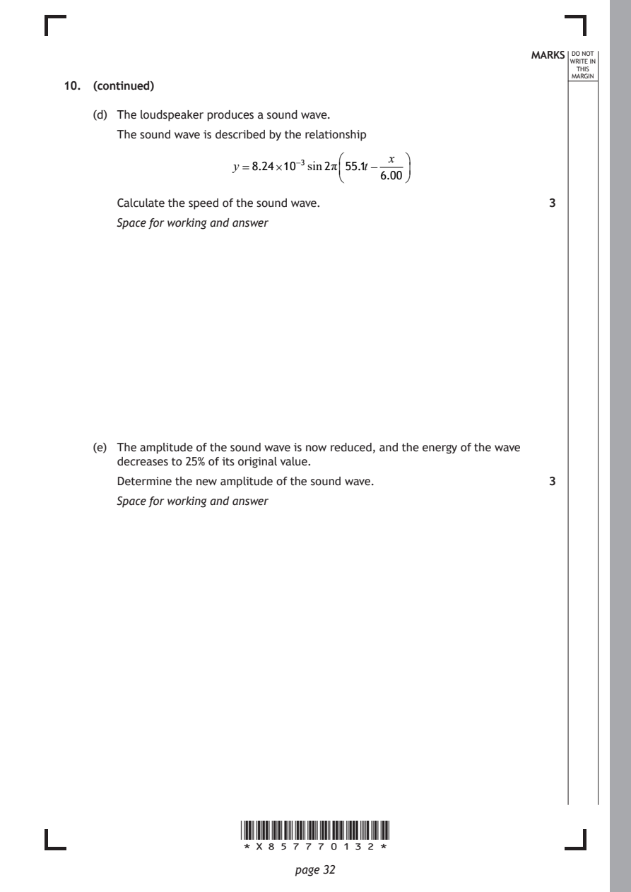
Selectable page text
MARKS _{W}^{D}_{R}^{O}_{I} _{T}^{N}OT
E IN
THIS
MARGIN
10. (continued)
(d) The loudspeaker produces a sound wave.
The sound wave is described by the relationship
x
y =8.24×10⁻³sin2π55.1t−
6.00
Calculate the speed of the sound wave. 3
Space for working and answer
(e) The amplitude of the sound wave is now reduced, and the energy of the wave
decreases to 25% of its original value.
Determine the new amplitude of the sound wave. 3
Space for working and answer
*X857770132*
page 32PDF page 33
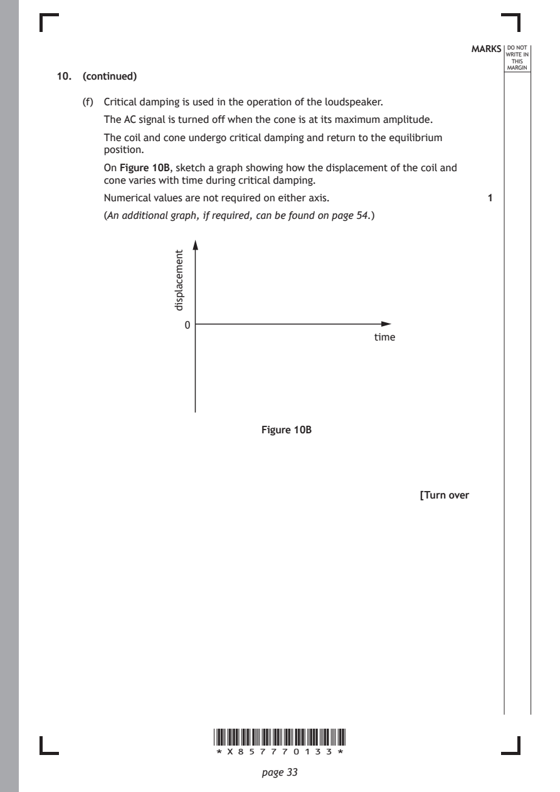
Selectable page text
MARKS _{W}^{D}_{R}^{O}_{I} _{T}^{N}OT
E IN
THIS
MARGIN
10. (continued)
(f) Critical damping is used in the operation of the loudspeaker.
The AC signal is turned off when the cone is at its maximum amplitude.
The coil and cone undergo critical damping and return to the equilibrium
position.
On Figure 10B, sketch a graph showing how the displacement of the coil and
cone varies with time during critical damping.
Numerical values are not required on either axis.
(An additional graph, if required, can be found on page 54.)
time
*X857770133*
page 33
tnemecalpsid
1
0
Figure 10B
[Turn overPDF page 34
Question 11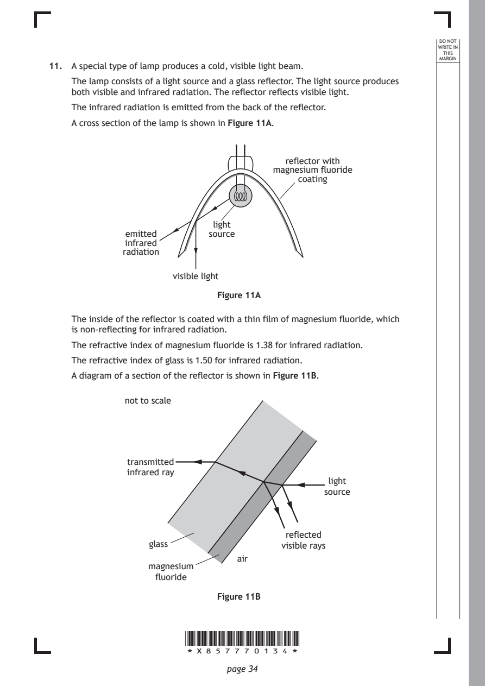
Selectable page text
DO NOT
WRITE IN
THIS
MARGIN
11. A special type of lamp produces a cold, visible light beam.
The lamp consists of a light source and a glass reflector. The light source produces
both visible and infrared radiation. The reflector reflects visible light.
The infrared radiation is emitted from the back of the reflector.
A cross section of the lamp is shown in Figure 11A.
reflector with
magnesium fluoride
coating
light
emitted source
infrared
radiation
visible light
Figure 11A
The inside of the reflector is coated with a thin film of magnesium fluoride, which
is non-reflecting for infrared radiation.
The refractive index of magnesium fluoride is 1.38 for infrared radiation.
The refractive index of glass is 1.50 for infrared radiation.
A diagram of a section of the reflector is shown in Figure 11B.
not to scale
transmitted
infrared ray
light
source
reflected
glass visible rays
air
magnesium
fluoride
Figure 11B
*X857770134*
page 34PDF page 35
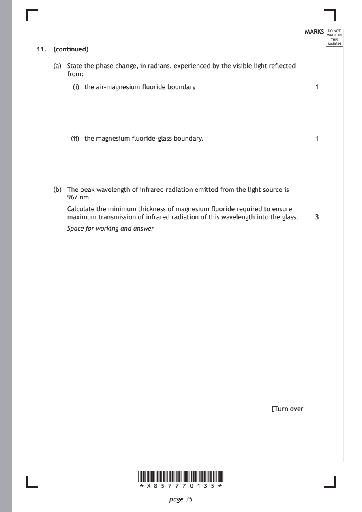
Selectable page text
MARKS _{W}^{D}_{R}^{O}_{I} _{T}^{N}OT
E IN
THIS
MARGIN
11. (continued)
(a) State the phase change, in radians, experienced by the visible light reflected
from:
(i) the air-magnesium fluoride boundary 1
(ii) the magnesium fluoride-glass boundary. 1
(b) The peak wavelength of infrared radiation emitted from the light source is
967 nm.
Calculate the minimum thickness of magnesium fluoride required to ensure
maximum transmission of infrared radiation of this wavelength into the glass. 3
Space for working and answer
[Turn over
*X857770135*
page 35PDF page 36
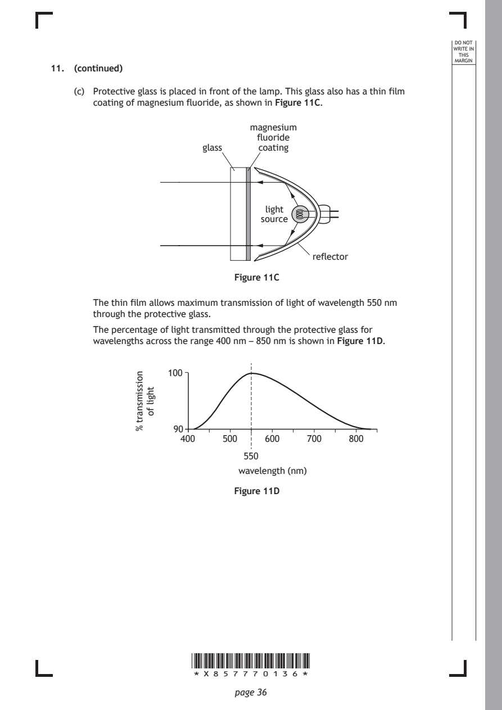
Selectable page text
DO NOT
WRITE IN
THIS
MARGIN
11. (continued)
(c) Protective glass is placed in front of the lamp. This glass also has a thin film
coating of magnesium fluoride, as shown in Figure 11C.
magnesium
fluoride
glass coating
light
source
reflector
Figure 11C
The thin film allows maximum transmission of light of wavelength 550 nm
through the protective glass.
The percentage of light transmitted through the protective glass for
wavelengths across the range 400 nm – 850 nm is shown in Figure 11D.
*X857770136*
page 36
noissimsnart
%
thgil
fo
100
90
400 500 600 700 800
550
wavelength (nm)
Figure 11DPDF page 37
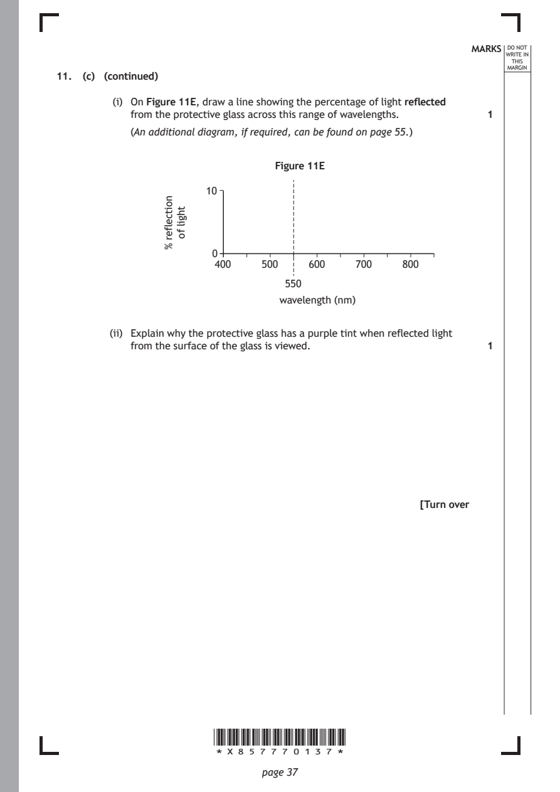
Selectable page text
MARKS _{W}^{D}_{R}^{O}_{I} _{T}^{N}OT
E IN
THIS
MARGIN
11. (c) (continued)
(i) On Figure 11E, draw a line showing the percentage of light reflected
from the protective glass across this range of wavelengths.
(An additional diagram, if required, can be found on page 55.)
Figure 11E
*X857770137*
page 37
noitcelfer
%
thgil
fo
1
10
0
400 500 600 700 800
550
wavelength (nm)
(ii) Explain why the protective glass has a purple tint when reflected light
from the surface of the glass is viewed. 1
[Turn overPDF page 38
Question 12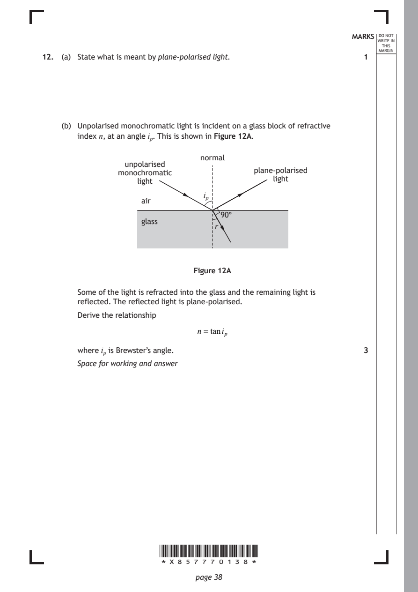
Selectable page text
MARKS _{W}^{D}_{R}^{O}_{I} _{T}^{N}OT
E IN
THIS
ARGIN
12. (a) State what is meant by plane-polarised light. 1 ^{M}
(b) Unpolarised monochromatic light is incident on a glass block of refractive
index n, at an angle iₚ. This is shown in Figure 12A.
normal
unpolarised
monochromatic plane-polarised
light light
iₚ
air
90°
glass
r
Figure 12A
Some of the light is refracted into the glass and the remaining light is
reflected. The reflected light is plane-polarised.
Derive the relationship
n=taniₚ
where iₚ is Brewster’s angle. 3
Space for working and answer
*X857770138*
page 38PDF page 39
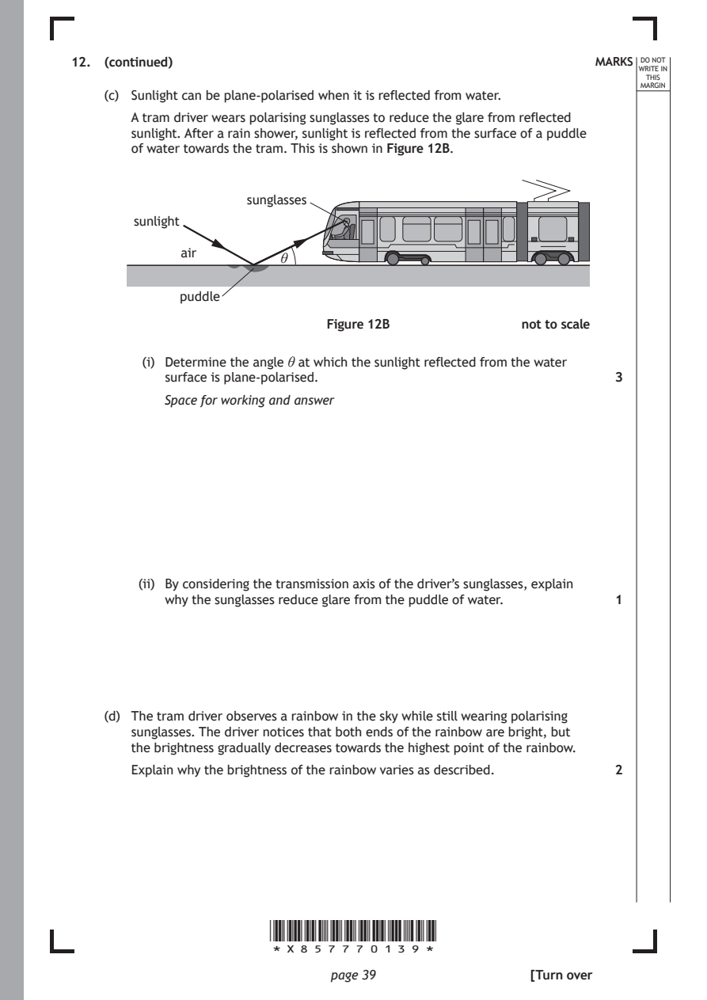
Selectable page text
12. (continued) MARKS _{W}^{D}_{R}^{O}_{I} _{T}^{N}OT
E IN
THIS
MARGIN
(c) Sunlight can be plane-polarised when it is reflected from water.
A tram driver wears polarising sunglasses to reduce the glare from reflected
sunlight. After a rain shower, sunlight is reflected from the surface of a puddle
of water towards the tram. This is shown in Figure 12B.
sunglasses
sunlight
air
θ
puddle
Figure 12B not to scale
(i) Determine the angle θ at which the sunlight reflected from the water
surface is plane-polarised. 3
Space for working and answer
(ii) By considering the transmission axis of the driver’s sunglasses, explain
why the sunglasses reduce glare from the puddle of water. 1
(d) The tram driver observes a rainbow in the sky while still wearing polarising
sunglasses. The driver notices that both ends of the rainbow are bright, but
the brightness gradually decreases towards the highest point of the rainbow.
Explain why the brightness of the rainbow varies as described. 2
*X857770139*
page 39 [Turn overPDF page 40
Question 13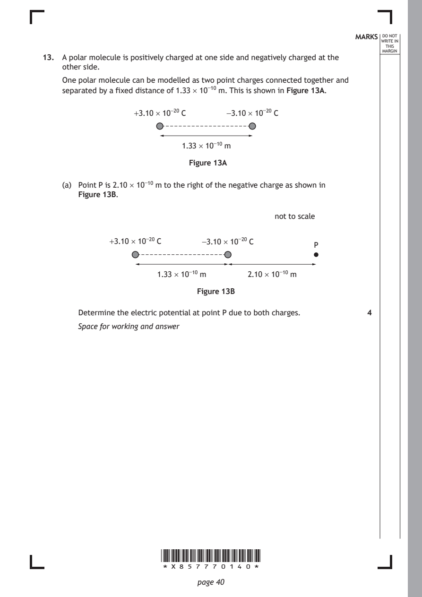
Selectable page text
MARKS _{W}^{D}_{R}^{O}_{I} _{T}^{N}OT
E IN
THIS
MARGIN
13. A polar molecule is positively charged at one side and negatively charged at the
other side.
One polar molecule can be modelled as two point charges connected together and
separated by a fixed distance of 1.33 × 10⁻¹⁰ m. This is shown in Figure 13A.
+3.10 × 10⁻²⁰ C −3.10 × 10⁻²⁰ C
1.33 × 10⁻¹⁰ m
Figure 13A
(a) Point P is 2.10 × 10⁻¹⁰ m to the right of the negative charge as shown in
Figure 13B.
not to scale
+3.10 × 10⁻²⁰ C −3.10 × 10⁻²⁰ C
P
1.33 × 10⁻¹⁰ m 2.10 × 10⁻¹⁰ m
Figure 13B
Determine the electric potential at point P due to both charges. 4
Space for working and answer
*X857770140*
page 40PDF page 41
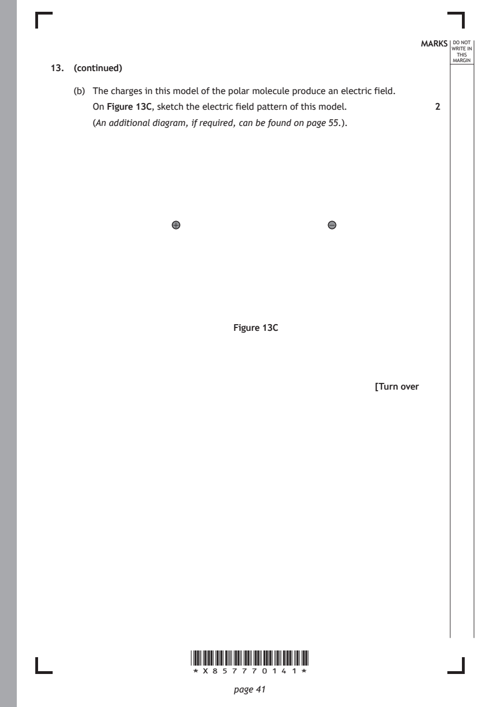
Selectable page text
MARKS _{W}^{D}_{R}^{O}_{I} _{T}^{N}OT
E IN
THIS
MARGIN
13. (continued)
(b) The charges in this model of the polar molecule produce an electric field.
On Figure 13C, sketch the electric field pattern of this model. 2
(An additional diagram, if required, can be found on page 55.).
+ −
Figure 13C
[Turn over
*X857770141*
page 41PDF page 42
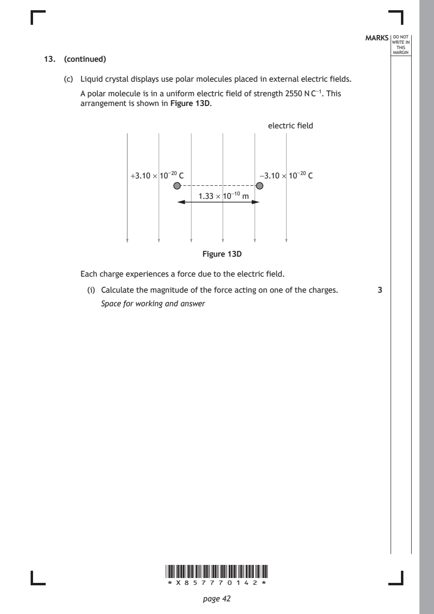
Selectable page text
MARKS _{W}^{D}_{R}^{O}_{I} _{T}^{N}OT
E IN
THIS
MARGIN
13. (continued)
(c) Liquid crystal displays use polar molecules placed in external electric fields.
A polar molecule is in a uniform electric field of strength 2550 N C⁻¹. This
arrangement is shown in Figure 13D.
electric field
+3.10 × 10⁻²⁰ C −3.10 × 10⁻²⁰ C
1.33 × 10⁻¹⁰ m
Figure 13D
Each charge experiences a force due to the electric field.
(i) Calculate the magnitude of the force acting on one of the charges. 3
Space for working and answer
*X857770142*
page 42PDF page 43
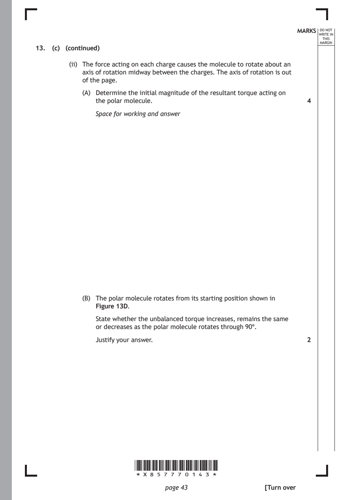
Selectable page text
MARKS _{W}^{D}_{R}^{O}_{I} _{T}^{N}OT
E IN
THIS
MARGIN
13. (c) (continued)
(ii) The force acting on each charge causes the molecule to rotate about an
axis of rotation midway between the charges. The axis of rotation is out
of the page.
(A) Determine the initial magnitude of the resultant torque acting on
the polar molecule. 4
Space for working and answer
(B) The polar molecule rotates from its starting position shown in
Figure 13D.
State whether the unbalanced torque increases, remains the same
or decreases as the polar molecule rotates through 90°.
Justify your answer. 2
*X857770143*
page 43 [Turn overPDF page 44
Question 14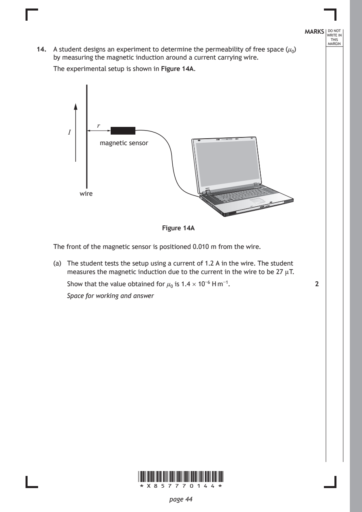
Selectable page text
MARKS _{W}^{D}_{R}^{O}_{I} _{T}^{N}OT
E IN
THIS
MARGIN
14. A student designs an experiment to determine the permeability of free space (μ₀)
by measuring the magnetic induction around a current carrying wire.
The experimental setup is shown in Figure 14A.
r
I
magnetic sensor
wire
Figure 14A
The front of the magnetic sensor is positioned 0.010 m from the wire.
(a) The student tests the setup using a current of 1.2 A in the wire. The student
measures the magnetic induction due to the current in the wire to be 27 µT.
Show that the value obtained for μ₀ is 1.4 × 10⁻⁶ H m⁻¹. 2
Space for working and answer
*X857770144*
page 44PDF page 45
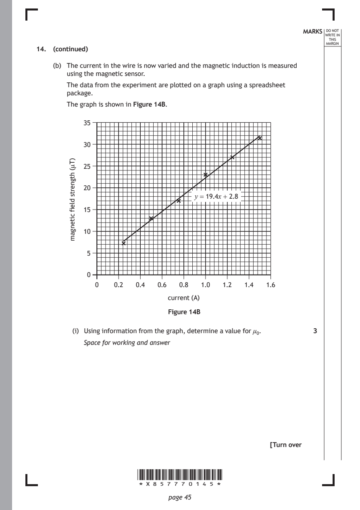
Selectable page text
MARKS _{W}^{D}_{R}^{O}_{I} _{T}^{N}OT
E IN
THIS
MARGIN
14. (continued)
(b) The current in the wire is now varied and the magnetic induction is measured
using the magnetic sensor.
The data from the experiment are plotted on a graph using a spreadsheet
package.
The graph is shown in Figure 14B.
35
30
25
20
15
10
5
0
current (A)
*X857770145*
page 45
)Tμ(
htgnerts
dleif
citengam
y = 19.4x + 2.8
0 0.2 0.4 0.6 0.8 1.0 1.2 1.4 1.6
Figure 14B
(i) Using information from the graph, determine a value for μ₀. 3
Space for working and answer
[Turn overPDF page 46
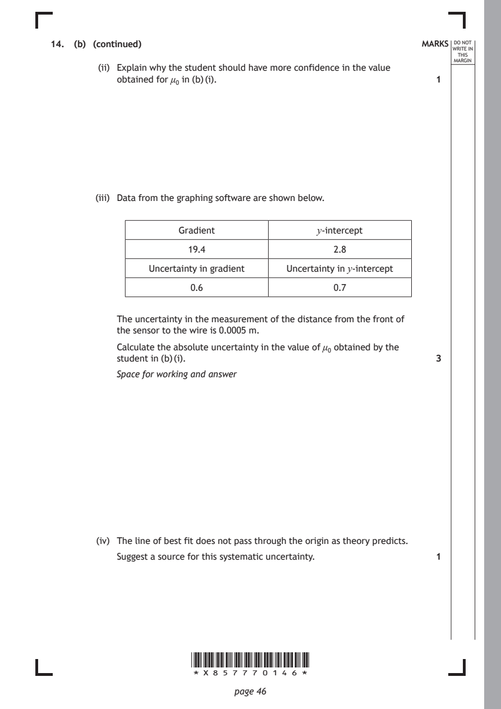
Selectable page text
14. (b) (continued) MARKS _{W}^{D}_{R}^{O}_{I} _{T}^{N}OT
E IN
THIS
MARGIN
(ii) Explain why the student should have more confidence in the value
obtained for μ₀ in (b) (i). 1
(iii) Data from the graphing software are shown below.
Gradient y-intercept
19.4 2.8
Uncertainty in gradient Uncertainty in y-intercept
0.6 0.7
The uncertainty in the measurement of the distance from the front of
the sensor to the wire is 0.0005 m.
Calculate the absolute uncertainty in the value of μ₀ obtained by the
student in (b) (i). 3
Space for working and answer
(iv) The line of best fit does not pass through the origin as theory predicts.
Suggest a source for this systematic uncertainty. 1
*X857770146*
page 46PDF page 47
Question 15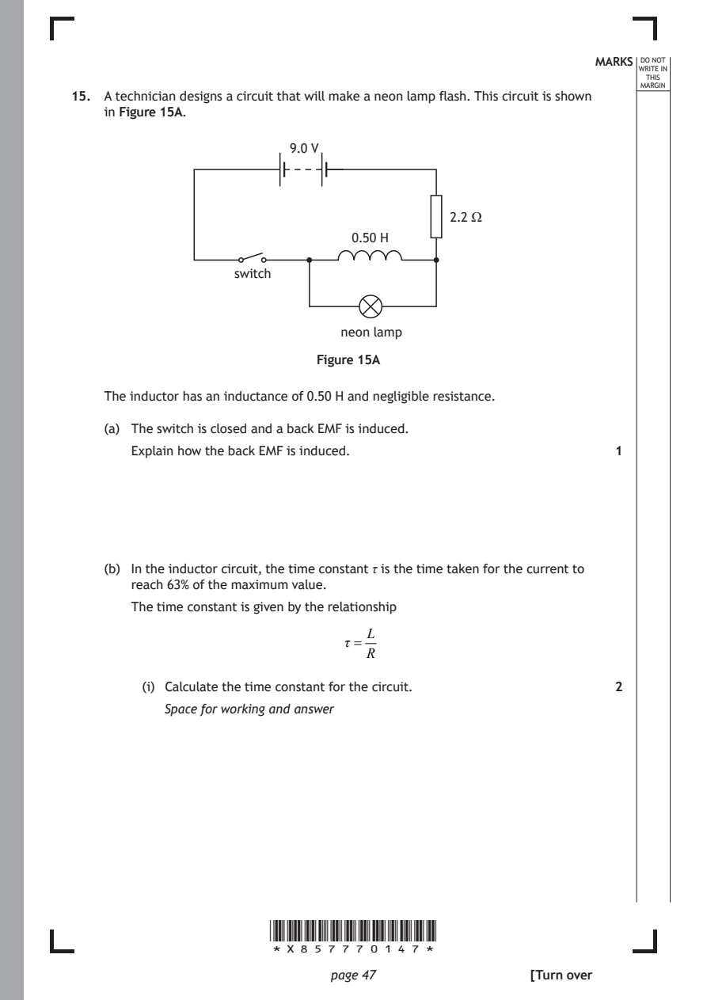
Selectable page text
MARKS _{W}^{D}_{R}^{O}_{I} _{T}^{N}OT
E IN
THIS
MARGIN
15. A technician designs a circuit that will make a neon lamp flash. This circuit is shown
in Figure 15A.
9.0 V
2.2 Ω
0.50 H
switch
neon lamp
Figure 15A
The inductor has an inductance of 0.50 H and negligible resistance.
(a) The switch is closed and a back EMF is induced.
Explain how the back EMF is induced. 1
(b) In the inductor circuit, the time constant τ is the time taken for the current to
reach 63% of the maximum value.
The time constant is given by the relationship
L
τ =
R
(i) Calculate the time constant for the circuit. 2
Space for working and answer
*X857770147*
page 47 [Turn overPDF page 48
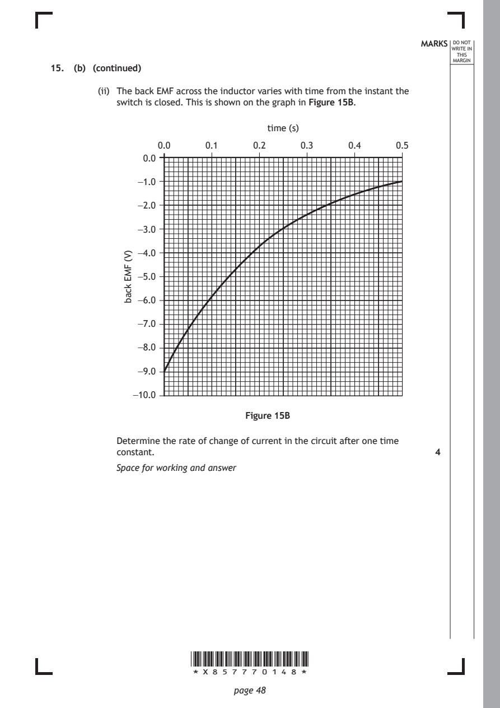
Selectable page text
MARKS _{W}^{D}_{R}^{O}_{I} _{T}^{N}OT
E IN
THIS
MARGIN
15. (b) (continued)
(ii) The back EMF across the inductor varies with time from the instant the
switch is closed. This is shown on the graph in Figure 15B.
time (s)
*X857770148*
page 48
)V(
FME
kcab
0.0 0.1 0.2 0.3 0.4 0.5
0.0
−1.0
−2.0
−3.0
−4.0
−5.0
−6.0
−7.0
−8.0
−9.0
−10.0
Figure 15B
Determine the rate of change of current in the circuit after one time
constant. 4
Space for working and answerPDF page 49
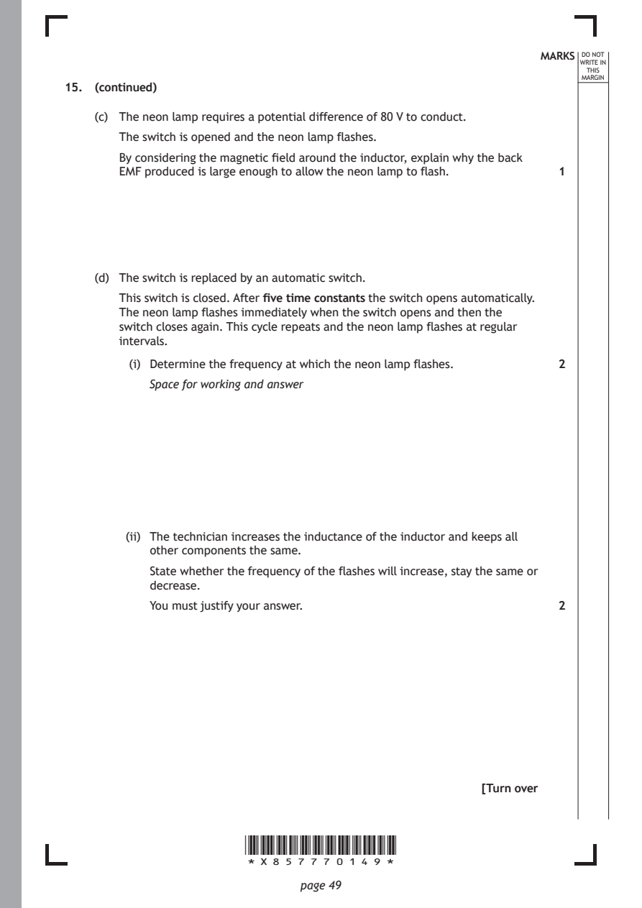
Selectable page text
MARKS _{W}^{D}_{R}^{O}_{I} _{T}^{N}OT
E IN
THIS
MARGIN
15. (continued)
(c) The neon lamp requires a potential difference of 80 V to conduct.
The switch is opened and the neon lamp flashes.
By considering the magnetic field around the inductor, explain why the back
EMF produced is large enough to allow the neon lamp to flash. 1
(d) The switch is replaced by an automatic switch.
This switch is closed. After five time constants the switch opens automatically.
The neon lamp flashes immediately when the switch opens and then the
switch closes again. This cycle repeats and the neon lamp flashes at regular
intervals.
(i) Determine the frequency at which the neon lamp flashes. 2
Space for working and answer
(ii) The technician increases the inductance of the inductor and keeps all
other components the same.
State whether the frequency of the flashes will increase, stay the same or
decrease.
You must justify your answer. 2
[Turn over
*X857770149*
page 49PDF page 50
Question 16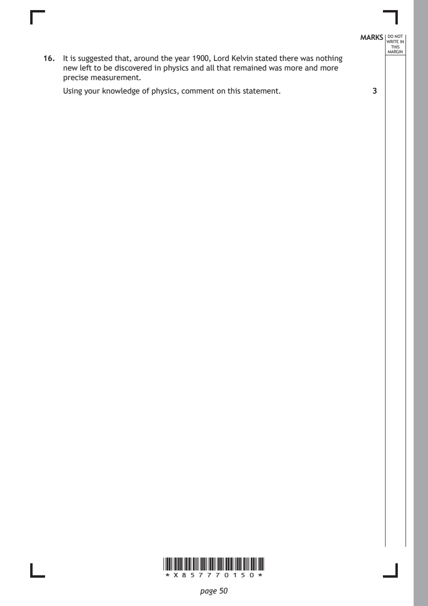
Selectable page text
MARKS _{W}^{D}_{R}^{O}_{I} _{T}^{N}OT
E IN
THIS
MARGIN
16. It is suggested that, around the year 1900, Lord Kelvin stated there was nothing
new left to be discovered in physics and all that remained was more and more
precise measurement.
Using your knowledge of physics, comment on this statement. 3
*X857770150*
page 50PDF page 51
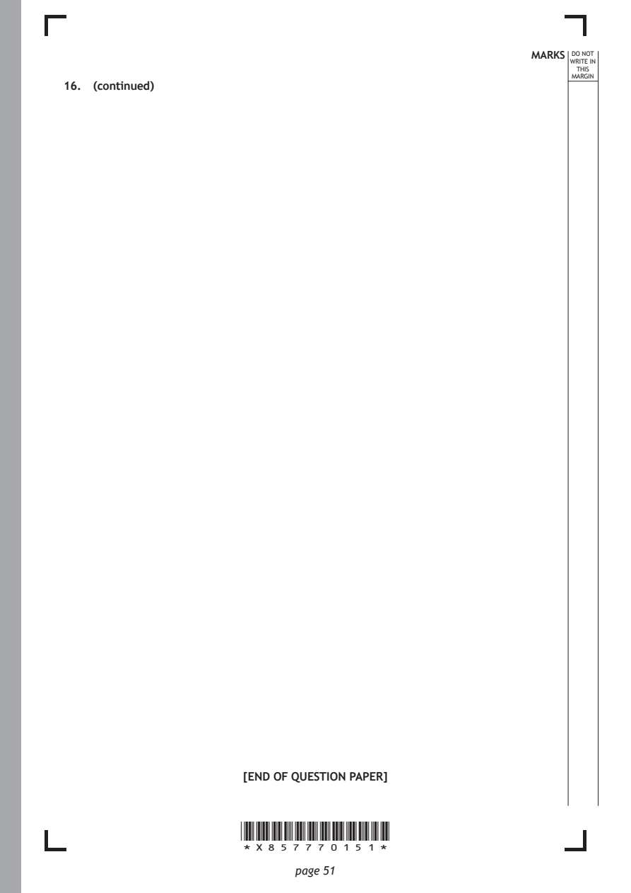
Selectable page text
MARKS _{W}^{D}_{R}^{O}_{I} _{T}^{N}OT
E IN
THIS
MARGIN
16. (continued)
[END OF QUESTION PAPER]
*X857770151*
page 51PDF page 52

Selectable page text
*X857770152*
page 52PDF page 53
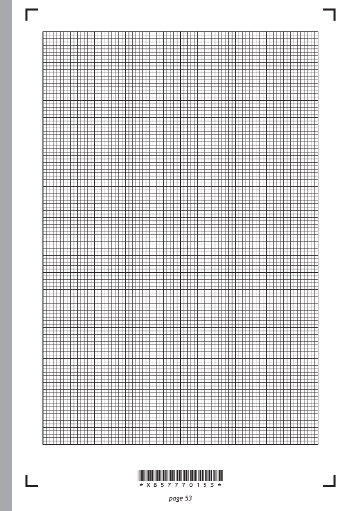
Selectable page text
*X857770153*
page 53PDF page 54
Selectable page text
MARKS _{W}^{D}_{R}^{O}_{I} _{T}^{N}OT
E IN
THIS
MARGIN
ADDITIONAL SPACE FOR ANSWERS AND ROUGH WORK
Additional diagram for use with question 6 (e)
102
solar
radii
103
solar
radii
1
solar
radii
10
solar
radii
10⁻¹
solar
radii
10⁻³ 10⁻²
solar
radii
solar
radii
40 000 20 000 10 000 5000 2500
temperature (K)
*X857770154*
page 54
)stinu
ralos(
ytisonimul
10⁶
10⁵
10⁴
10³
10²
10
1
10⁻¹
10⁻²
10⁻³
10⁻⁴
Additional graph for use with question 10 (f)
time
tnemecalpsid
0PDF page 55
Selectable page text
MARKS _{W}^{D}_{R}^{O}_{I} _{T}^{N}OT
E IN
THIS
MARGIN
ADDITIONAL SPACE FOR ANSWERS AND ROUGH WORK
Additional diagram for use with question 11 (c)
*X857770155*
page 55
noitcelfer
%
thgil
fo
10
0
400 500 600 700 800
550
wavelength (nm)
Additional diagram for use with question 13 (b)
+ −PDF page 56
Selectable page text
MARKS _{W}^{D}_{R}^{O}_{I} _{T}^{N}OT
E IN
THIS
MARGIN
ADDITIONAL SPACE FOR ANSWERS AND ROUGH WORK
*X857770156*
page 56PDF page 57
Selectable page text
MARKS _{W}^{D}_{R}^{O}_{I} _{T}^{N}OT
E IN
THIS
MARGIN
ADDITIONAL SPACE FOR ANSWERS AND ROUGH WORK
*X857770157*
page 57PDF page 58

Selectable page text
[BLANK PAGE]
DO NOT WRITE ON THIS PAGE
*X857770158*
page 58PDF page 59
Selectable page text
[BLANK PAGE]
DO NOT WRITE ON THIS PAGE
*X857770159*
page 59PDF page 60
Selectable page text
[BLANK PAGE]
DO NOT WRITE ON THIS PAGE
Acknowledgement of copyright
Question 2 Vectorpocket/shutterstock.com
Question 4 Dima Zel/shutterstock.com
Question 5 Julia Kopacheva/shutterstock.com
*X857770160*
page 60